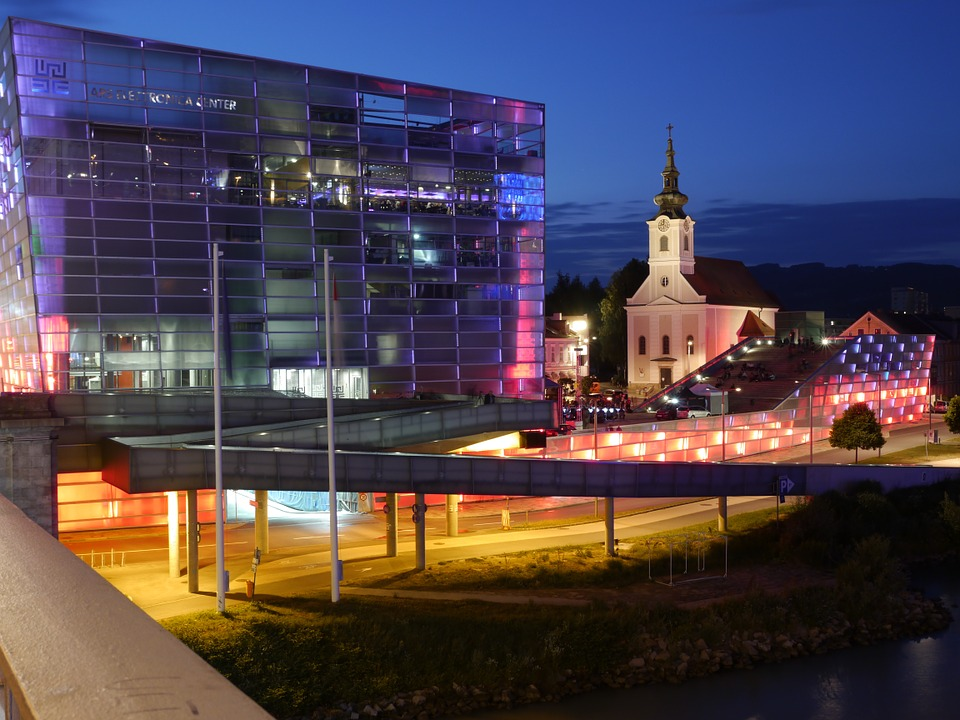

Virtual Machine Meetup
Call for Participation at the VMM2018
The 5th Virtual Machine Meetup (VMM '18) is a venue for discussing the latest research and developments in the area of managed language execution.
It will be held September 14th at the Department of Computer Science, Faculty of Engineering and Natural Sciences, Johannes Kepler University Linz, Austria and is co-located with the Managed Languages & Runtimes Conference 2018.
We welcome presentations of new research results, experience reports, as well as position statements that can lead to interesting discussions.
Preliminary Program
- Thomas Würthinger (Oracle Labs): Welcome & Introduction
- Andreas Stadelmeier: Java-TX - Generating bytecode from typeless Java
- Florian Latifi: Benchmarking Partial Evaluation in Truffle
- Alireza Abyaneh, Clement Poncele: Complete Symbolic Analysis in Selfie
- Benoit Daloze: Parallel and Thread-Safe Ruby at High-Speed with TruffleRuby
- Stefan Marr: VM Support to Debug Concurrency Bugs: Async. Stack Traces, Replay, and Bug Detection for Event Loops
- Shoaib Akram: Profile-Driven Write Rationing Garbage Collection for Hybrid Memories
- Juan Fumero: GarbageBench: A framework for Java memory workload emulation and benchmarking
- David Herrera: MatWably: A matrix library for the web and a static compiler from Matlab to web languages
- Chris Thalinger: TBA
Participation
Participation is free of charge! To participate, please register until August 31st, 2018 so we can prepare accordingly.
There are limited participant slots due to the constraints of the room, so please register early!
Important dates
Submissions: August 15th, 2018Author notification: August 16th, 2018- Registration for participation: until August 31st, 2018
- Virtual machine Meetup: September 14th at JKU Linz
- Introduction and Speakers Dinner: evening of September 13th, near JKU Linz
- Social Event: on Saturday 15th, given sufficient interest
Program committee
- David Leopoldseder, JKU Linz, Austria
- Christian Wirth, Oracle Labs, Austria
- Thomas Wuerthinger, Oracle Labs Switzerland

Ars Electronica Center, Linz; CC-0 pixabay.com
{kind=link}